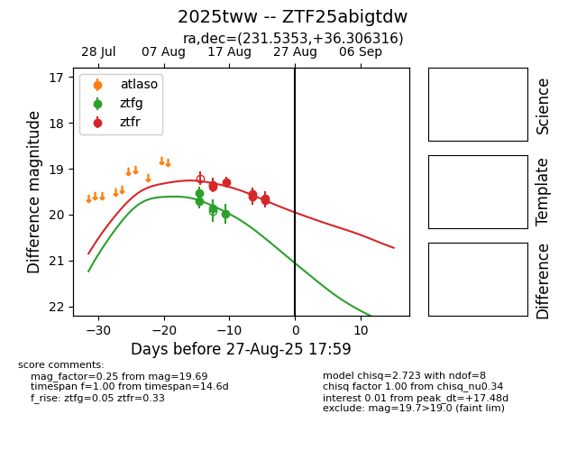

Target 2025tww at 2025-08-21 09:29, see:
FINK: fink-portal.org/ZTF25abigtdw
Lasair: lasair-ztf.lsst.ac.uk/objects/ZTF25abigtdw
ALeRCE: alerce.online/object/ZTF25abigtdw
TNS: wis-tns.org/object/2025tww
YSE: ziggy.ucolick.org/yse/transient_detail/2025tww
alt names
ZTF25abigtdw (ztf,alerce)
2025tww (tns,yse)
coordinates:
equatorial (ra, dec) = (231.5353,+36.30628)
galactic (l, b) = (58.4214,+56.08947)
photometry
last ztfg=20.18, ztfr=19.55
7 ztfg, 3 ztfr detections
